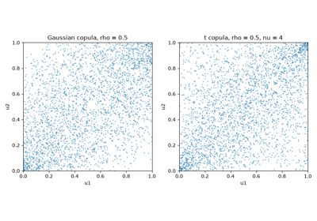
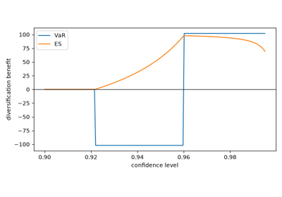
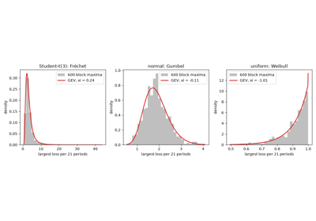
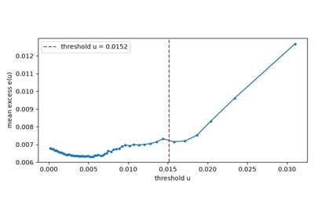
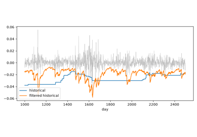

Examples#
This gallery walks through every public feature of financialkit.risk:
value at risk by historical, parametric, Cornish-Fisher, Monte Carlo,
age-weighted and filtered historical methods; Roy’s safety-first
criterion; expected shortfall, coherence and Euler allocation; extreme
value theory; VaR backtests; copulas and tail dependence; and drawdowns.
See also the narrative tutorial:
Each script in this gallery is self-contained and can be run directly with
python examples/risk/<section>/<script>.py.
Sections#
var – Cornish-Fisher, Roy’s safety first, parametric (RiskMetrics) VaR, Monte Carlo VaR, hybrid VaR and filtered historical simulation.
expected_shortfall – the coherence axioms, Euler risk allocation and the Acerbi-Tasche estimator.
extreme_value – Fisher-Tippett block maxima and peaks over threshold.
backtesting – Kupiec’s test, the Basel traffic light and Christoffersen’s independence test.
copulas – Sklar’s theorem with the Gaussian copula, and the t copula’s tail dependence.
drawdowns – maximum drawdown and the Calmar ratio.
Backtesting#
Checking a VaR model against realised losses: the number of exceptions, the regulator’s zones and whether exceptions cluster.
Copulas#
Dependence separated from the marginals, and the joint extremes that the Gaussian copula misses.

Demarta-McNeil: the t copula and tail dependence
Drawdowns#
The worst fall from a peak, and return measured against it.
Expected shortfall and coherence#
What makes a risk measure coherent, why VaR is not, and how expected shortfall is estimated and allocated to positions.

Artzner-Delbaen-Eber-Heath: coherent risk measures
Extreme value theory#
The laws of maxima and of exceedances over high thresholds, and the tail risk figures they extrapolate.

Fisher-Tippett: the three laws of the maximum

Peaks over threshold: Pickands-Balkema-de Haan
Value at risk#
The loss that is exceeded with a given small probability, estimated in closed form, by expansion, by simulation and from weighted or filtered history.

Barone-Adesi: filtered historical simulation